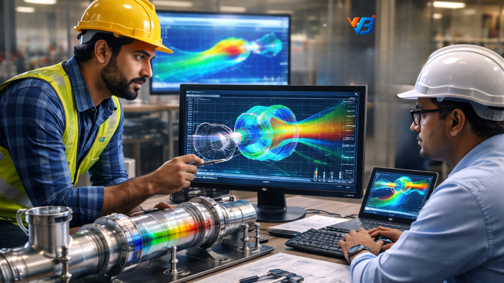
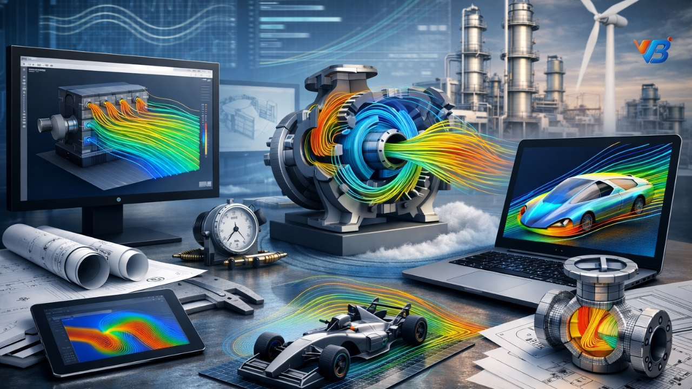

What is Flow Analysis?
Flow analysis is a crucial tool in engineering and design processes. It involves studying the behaviour of fluids and gases in systems, such as pipelines, pumps, and heat exchangers. By analyzing flow patterns, pressure distribution, and velocity profiles, engineers can optimize the efficiency and performance of these systems.

The Benefits of Flow Analysis
Implementing flow analysis techniques offers several advantages for businesses across industries. Here are some key benefits:
1. Improved System Performance
Flow analysis helps identify areas of turbulence, pressure drops, and other inefficiencies in fluid systems. By addressing these issues, engineers can optimize system performance, leading to improved productivity, energy efficiency, and reduced operating costs.
2. Enhanced Design and Innovation
Through flow analysis, engineers can gain deep insights into the behaviour of fluids in intricate systems. This enables them to design more innovative products, improve existing designs, and overcome potential design challenges.
Risk Assessment and Safety
Flow analysis plays a critical role in assessing potential risks and ensuring the safety of fluid systems. By identifying potential issues like cavitation, excessive pressure, or flow imbalances, engineers can take proactive measures to mitigate risks and maintain system integrity.
Cost Savings
By optimizing fluid systems and identifying potential issues beforehand, flow analysis helps avoid costly repairs, downtime, and equipment failures. This proactive approach helps businesses save significantly in the long run.
Choose VB® Engineering for Expert Flow Analysis
At VB® Engineering, we have a proven track record of providing reliable and accurate flow analysis services. Our team of experts utilizes advanced computational fluid dynamics (CFD) techniques and state-of-the-art software to simulate and analyze fluid behaviour. We work closely with our clients to understand their specific needs and deliver tailored solutions that meet their objectives.

Contact Engineering Experts Today
VB® Engineering today to learn more about our flow analysis services and how we can help optimize your fluid systems for maximum performance and efficiency. Trust our expertise to deliver reliable results that drive your business forward.